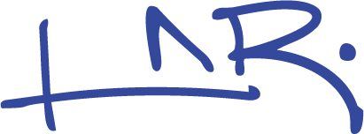

LUCIANA NOEMI RUDOLPHThe Innovation Park Artificial Intelligence (IPAI) campus in Heilbronn is a 30-hectare hub for over 5,000 researchers, designed by MVRDV around a distinctive circular masterplan. The striking geometry — visible even in satellite imagery — positions the campus as a global landmark for responsible AI development, with laboratories, housing, offices, and a central cultural building for public engagement.
At the heart of the campus stands the Communication Center, a cylindrical tower with a reflective facade that serves as the public interface between the AI research community and visitors. The building houses exhibitions, conferences, seminars, and a visitor centre, conceived in collaboration with Berlin-based placemaking experts REALACE to invite the public into dialogue with emerging technologies.
The design emphasises human wellbeing as a counterpoint to screen-intensive AI work. A car-free campus, bioclimatic facades, hybrid timber construction, and a parametric landscape by LOLA create an environment where tactile organic materials and generous green spaces encourage outdoor collaboration. Energy consumption is projected at 80% below a typical campus, with carbon neutrality achieved over the building's lifespan through renewable energy, reforestation, and bio-based construction systems.